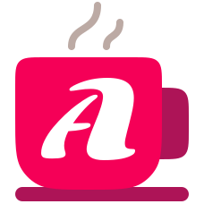
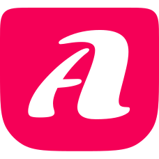

先看懂，再深入
只有一个主新闻。标题、原文摘录、来源与操作各司其职，不用十二张同样大小的卡片抹平优先级。

Abe-spressoThe editorial standard
Abespresso 前端设计规范
无衬线排版 · 编辑式布局 · 有边界的 AI 日报
只有一个主新闻。标题、原文摘录、来源与操作各司其职，不用十二张同样大小的卡片抹平优先级。
卡片保留原文标题与短摘录，不生成摘要或价值解释。原始来源与延伸阅读分开，示例不冒充实时新闻。
用黑体字形、精确对齐和克制强调建立气质。避免霓虹渐变、悬浮卡片和无意义动效。
Latin / Barlow
Aa 0123
Intelligence,
in perspective.
中文 / Noto Sans SC
智能，有据。
理解技术，
而不追逐噪声。
字体状态：Barlow 已随仓库提供；中文优先 Noto Sans SC，未安装时使用思源黑体、苹方、微软雅黑或系统无衬线回退。正式发布前需补齐中文字体分片。
每日 AI，清醒精选
值得深入的五件事
当模型能力走向真实工作流
在采用一个新模型之前，先看任务完成率、使用成本和失败边界。技术报道需要呈现事实，也需要说明这些变化对产品决策意味着什么。
从一手资料出发，把复杂技术解释清楚。Less noise. More understanding.
主题配图，非事件现场。仅图片署名、非交互徽标和次要注释使用此字号。

品牌鲜艳，阅读克制。正文与标题使用咖啡墨色，大面积保留暖纸白。亮洋红只用于 Logo和少量强调线；不要把六类资讯染成六种颜色。

Claude 3.7 Sonnet shows particularly strong improvements in coding and front-end web development.
普通精选 / 原文标题
AI Agents are programs where LLM outputs control the workflow.
普通精选 / 原文标题
We introduce AI co-scientist, a multi-agent AI system built with Gemini 2.0
Qwen2.5-Max, a large-scale MoE model that has been pretrained on over 20 trillion tokens
此处只展示主新闻、普通精选和速览三种密度，并非完整日报。业务首页仍是 Top 5 + 7；不能将本样板的条目数量复制为产品规则。来源核对清单见 news-sources.json；原文声明不等于本站独立验证。
保留不确定性，不把收录日期当作发布日期。
实际界面应保留已有数据与输入，并提供真实重试操作。
排版示例，非事实报道
一份好的科技日报，不必把所有消息都搬到读者面前。它应该说明发生了什么，解释为什么值得注意，再留下可以继续核查的原始资料。
同样地，清晰的界面也不需要不断提醒自己有多先进。中文与英文都采用无衬线字体，让模型名称、技术术语和解释文字共享一致的节奏。
Good editorial design makes priorities visible. It gives each story enough space to be understood, while keeping sources, context, and uncertainty close to the claims they support.
迁移边界：v1.2 已迁移实际页面的字号、间距、44px控件与响应式；CJK字体分片和跨浏览器验收仍未完成。本样板不是全站合规证明，也不会修改你的现有收藏和阅读进度。